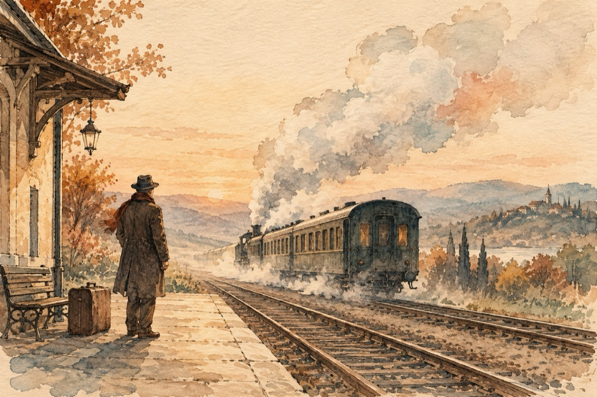

Melancolie
Trenul a plecat din gară
A plecat a câta oară
A pleacat dar de-astădat'
M-a lăsat înlăcrimat!
A plecat cu el și dorul
A plecat ducând amorul
Ce cu-o clipă mai 'nainte
O țineam la piept fierbinte
Trenule, tren de metal
De iubire n-ai habar
Pufăi, scoți aburi pe nas
Nu știi-n urmă ce-a rămas?
Sufletul îngândurat
Inima neavând pace
După cea care-a plecat
Dacă se va mai întoarce?
Trenul pleacă, dar și vine
Tresaltă inima-n mine
Mi-a adus iubirea mea
Și cu ea și dragostea
Trenule, Măria ta!
Vasile Groza